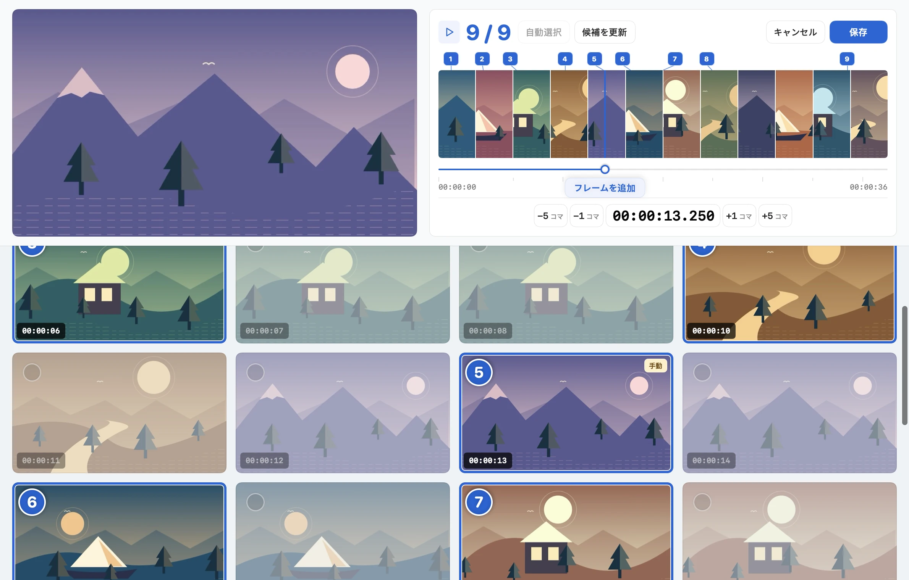

ShotMap の絵コンテで使うコマを手動で選ぶ
タイムラインで使いたいコマを見つけ、残りのマスを自動選択で埋めます。
このガイドでは macOS 13 以降で ShotMap 0.2.20 と、36 秒・960 × 540 のサンプル動画 Color Trail.mp4 を使います。動画をファイルの保存が可能なフォルダに置いてください。
サンプル動画 Color Trail.mp4 をダウンロード
- Color Trail.mp4 で 3 × 3 の JPG を作ります。プレビューを選び、右下のコマを選ぶをクリックします。
- タイムコード欄に 00:00:13.250 と入力して Return キーを押します。前後のコマを確認するときは −1 または +1 を使います。
- タイムラインの下にあるフレームを追加をクリックし、追加された候補を選びます。候補とタイムラインに番号が表示されます。
- 自動選択をクリックすると、選んだコマを残したまま残り 8 コマが埋まります。9 / 9 を確認して保存をクリックします。

書き出した画像を確認
プレビューで選んだ場面を確認してから、Finder に表示で新しい JPG を開きます。編集前の JPG は動画と同じフォルダに残ります。